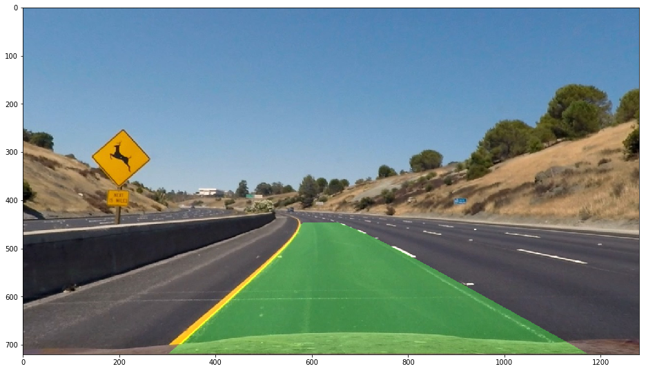

Advanced Lane Finding Project
The goals / steps of this project are the following:
You're reading it! If you want to see at the corresponding code take a look at the Advanced Lane Finding.ipynb. It is basically structured by following the same rubriks as this document.
For the in depth theory behinde camera calibration check out this description by opencv.
To undistort an image the pixels of an image are multiplied with a transformation matrix. The transformation matrix is calculated by comparing photographs of a checkerboard with its theoretical flat representation.
Here is a distorted image of a checkerboard.
And here it is undistorted.
Here you can see the distorted and undistorted image from the camera in the car.
Distorted:

Undistorted:
The differences are subtle. But look at the car at the right edge of the image and you will see the differences.
In the notebook all filteres discussed in the course are implemented and you can experiment with them by using sliders provided with the interactive widgets. I think the sobel filter in x orientation and the stauration channel of the hls colorspace are most useful for this task. So I added up the binary outputs of these filters to create an image to find lane lines.
The thresholds are:
Image with sobel filter and saturation thresholding:

The four points to apply a transformation are the bottem corners of the image and then two points which are moved some percent from the center of the image to the left and right and some percent to the bottom. To find which values for these percentages are good I used the ipython interactive widgets and sliders. I used an image with straight lines as a reference and moved the sliders to get prallel straight lines in the transformed image.
In the left image you can see a red rectangle. This is the rectangle used for the perspective transform to the right image.

Here is an example with a curve.
Here the warp and the filters are combined:

As a first step a sliding window is extracted from the bottom of the filtered and transformed image. Then a histogramm is calculated which sums the number of white pixels for each column in the window.
The histogram gets split in half and the peaks in the histogram are used to calculate boxes in which lane lines are identified. These boxes have a width of 300 pixels and are 72 pixels high. The center of the box is at the peak of the histogram.
Then the boxes is moved from the bottom to the top of the image. A new histogram is calculated for each box and the box is repositioned at the peak of the histogram.
Here you can see the boxes moving along the lane lines:

Then all white pixels in the left or right boxes are marked as left or right lane pixels. Their position in the image is used to fit a polynomial line.
The function for a polynomial line is:
x = f(y)
x = A * y**2 + B * y + C
The pixels are fitted and the function is solved for the A, B and C coefficient.
Here you can see in orange the pixels of the left lane and in blue the pixels of the right lane. Green are the boxes to search for lane pixels and in yellow are the fitted polynomial lines.
The curve is calculated at the same place where the lines are fitted in the fit_lane function . The formula to calculate the curve at any point y is as follows:
So I calculated the curve at the very bottom of the image (y = 720).
Here is an example of my result on a test image:

I made two videos, one with smoothing of the lane coefficients enabled and one disabled. You can see that most of the failures get resolved by the smoothing.
At the bottom of the video you can see the filtered an transformed image, the sliding boxes to find the lines and the curvature and deviation from the line center.
Here's a link to my video without smoothing
Here's a link to my video with smoothing
I don't really like the approach to set hardcoded thresholds to create a binary image. I think a lot of information is lost by that process. Also when the conditions of the image, like the brightness, changes the thresholds are most likely wrong and it results in failures. Also it is very time consuming to pick good thresholds. I definetly should have invested more time into that. But isn't parameter tuning something an optimizer should do? Therefore one has to come up with a clever way to calculate the error.
Also for steep curves the perspective transformation is not ideal, as the lane lines get out of the frame. This is already an issue with the lane lines in the project video.
I did not have enough time to experiment with the challenge videos, but I ran my pipeline on these videos and it doesn't work at all. I think the easy challenge needs other source points for the image transformation and a better system to discard wrong lane detections. Im also not sure if it is possible to solve the harder challenge with this approach at all.
Here's a link to the challenge video
Here's a link to the harder challenge video
I would really like to experiment with deep concolutional networks to solve this problem. Then the whole image could be used to learn detecting lane lines without discarding any information contained in the original image. Also differences in brightness could automatically resolved by the network. Another carnd student tried this. He had to put a lot of time into that approach, as he had to generate its own training set but got pretty good results in the end.